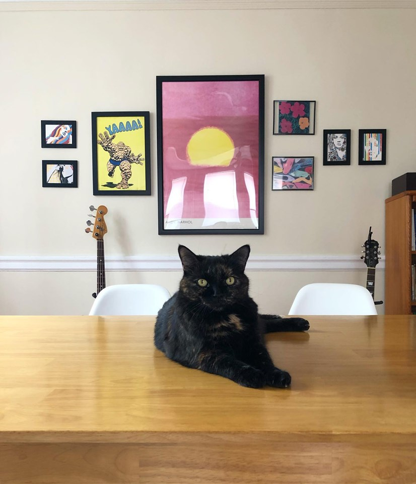

|  |
About MeI live in Baltimore, MD with my wife of 5 years and our two cats, Hope and Paisley. When I am not doing philosophy, I enjoy watching horror movies, smoking pipes/cigars, and playing the guitar. I am an aspiring software engineer/data scientist, presently learning C++, Java and Python.I studied philosophy, religion and applied math at Liberty University and earned an MA in philosophy from Ohio University. Before coming to Hopkins I spent a year at Wayne State University in Detroit. I often think fondly of the city and hope to return there some day. |